Teledetekcja daje wiele możliwości, ale zwykle mierzy proxy zjawisk, a nie samo zjawisko bezpośrednio.
Teledetekcja
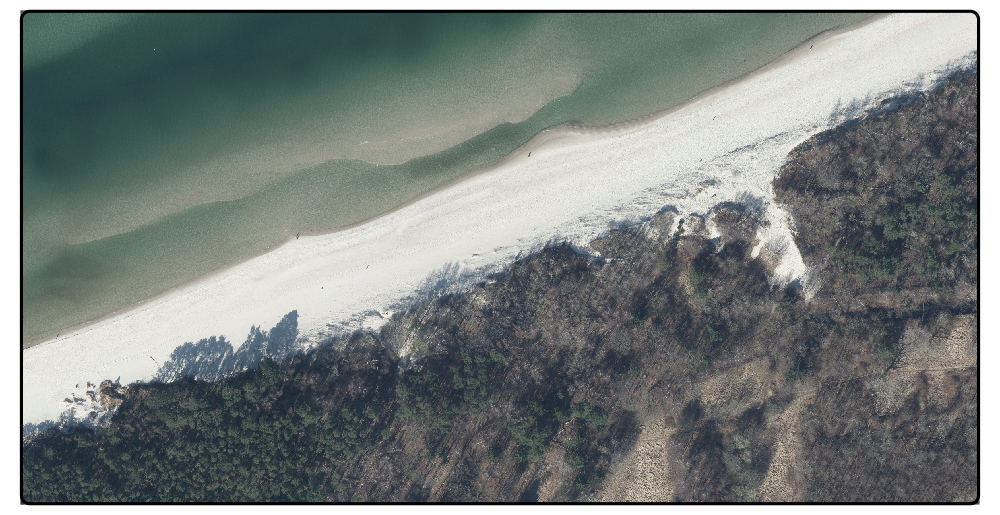
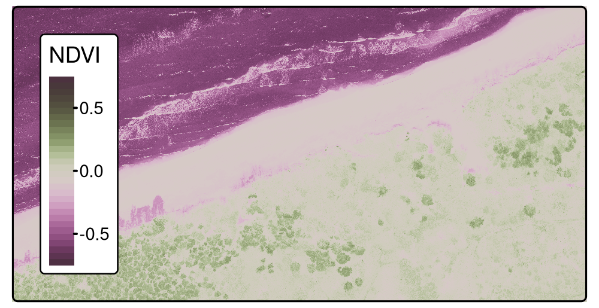
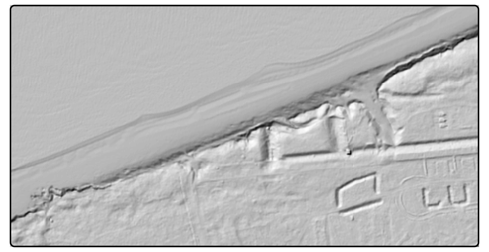
Bezpośrednio obserwujemy sygnał (np. odbicie promieniowania), z którego dopiero wnioskujemy o typie pokrycia terenu, kondycji roślinności czy stanie środowiska.
Pomary terenowe
Tradycyjne pomiary terenowe (uwzględniające lokalizację): pomiary jakości wody, powietrza, gleby, itd.
Sieci monitoringowe
Eksperymenty naukowe
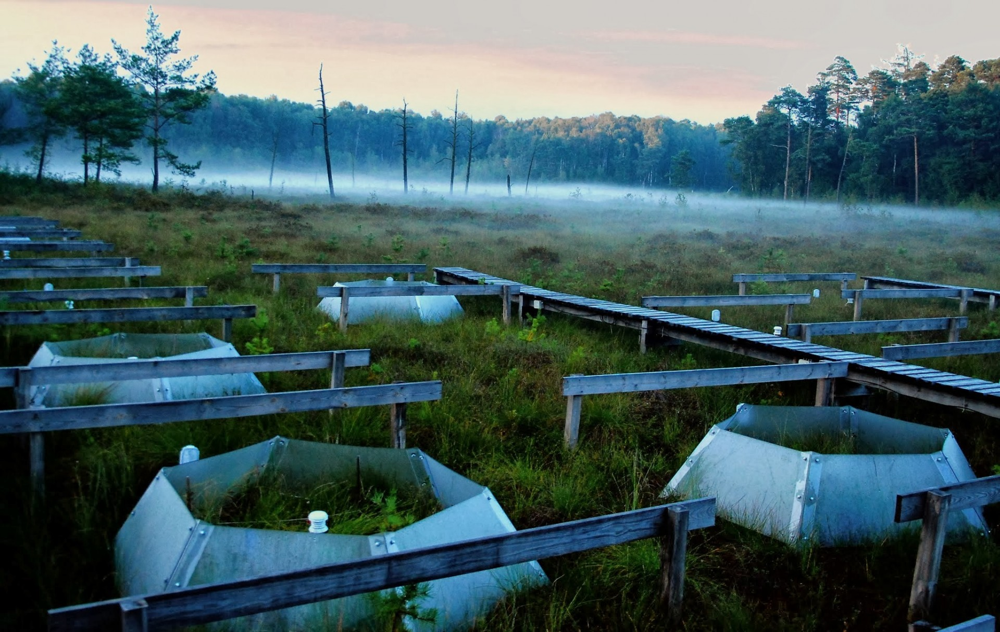
CLIMPEAT project (fot. Jan Barabach)
fot. Maurycy Żarczyński
Dane terenowe są droższe i trudniejsze do zebrania, ale często pozostają niezastąpione jako pomiar bezpośredni i punkt odniesienia dla danych zdalnych.
Inne źródła danych przestrzennych
Granice administracyjne
Dane statystyczne
Mapy analogowe
Reanalizy klimatyczne; scenariusze klimatyczne
Crowdsourcing (np. OpenStreetMap)
Media społecznościowe (?)
Dane w czasie rzeczywistym (np. z samochodów autonomicznych)
W danych tabelarycznych kolejność wierszy zwykle nie ma znaczenia.
W danych przestrzennych położenie i relacje między obiektami są częścią informacji.
Specyficzne wyzwania:
Złamanie założenia niezależności
MAUP (ang. Modifiable Areal Unit Problem)
Autokorelacja przestrzenna
Heterogeniczność przestrzenna
Problem #1: Autokorelacja przestrzenna
“Wszystko jest związane ze wszystkim innym, ale rzeczy bliskie są bardziej powiązane niż rzeczy oddalone” (Tobler, 1970)
“Autocorrelation may be found in the data also due to, for example, omitted variables or inappropriate levels of aggregation” (Pebesma and Bivand, 2023)
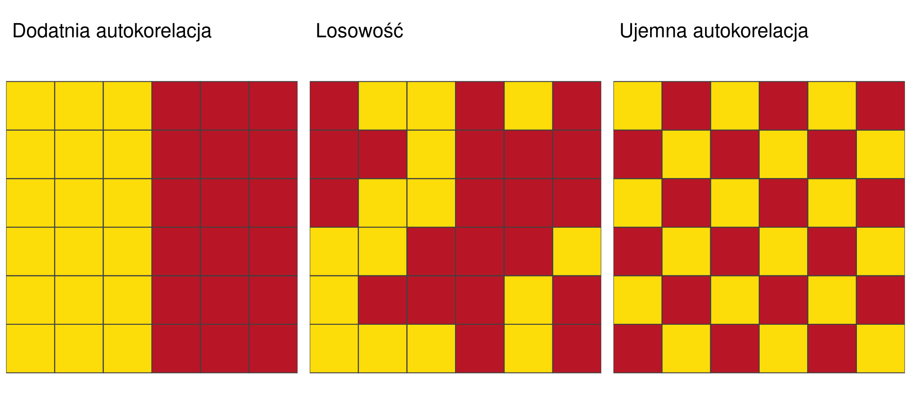
Klasyczne metody statystyczne zakładają niezależność obserwacji. W danych przestrzennych to założenie jest niemal zawsze łamane.
Bliskość przestrzenna zmienia więc rozkład informacji: obserwacje z sąsiednich lokalizacji są często bardziej podobne niż obserwacje odległe.
Problem #2: Heterogeniczność przestrzenna
Heterogeniczność: Parametry procesów nie są stałe w przestrzeni.
Ta sama zależność między zmiennymi może wyglądać inaczej w różnych miejscach.
Przykłady:
lokalnie różne trendy
zmienna wariancja błędów
brak stacjonarności procesu
Konsekwencje:
model może dobrze opisywać średni obraz zjawiska, ale źle odwzorowywać lokalne wzorce i zależności
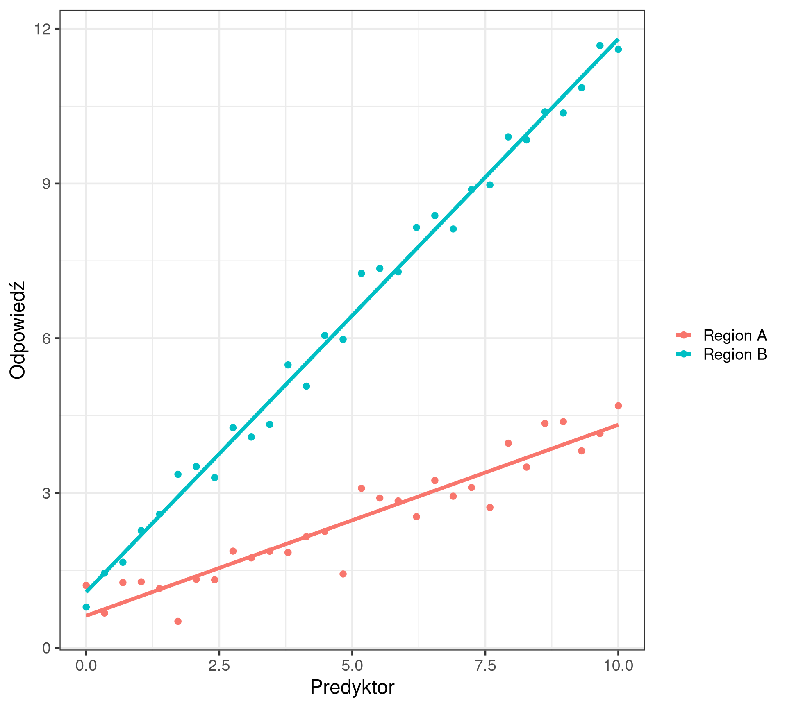
Dlaczego to ma znaczenie?
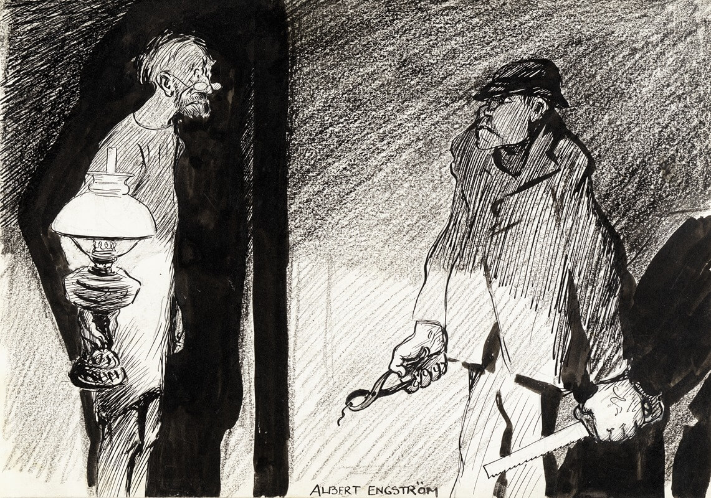
Ignorowanie autokorelacji i heterogeniczności prowadzi do:
Błędnego oszacowania p-values (często zbyt optymistyczne)
Niepoprawnych przedziałów ufności
Fałszywych wniosków o przyczynowości
Zbyt optymistycznej oceny jakości modeli i ich zdolności do uogólniania
Uczenie maszynowe używając danych przestrzennych
Problem: Mapowanie predykcyjne
Celem jest stworzenie ciągłej mapy na podstawie punktowych obserwacji i predyktorów przestrzennych.
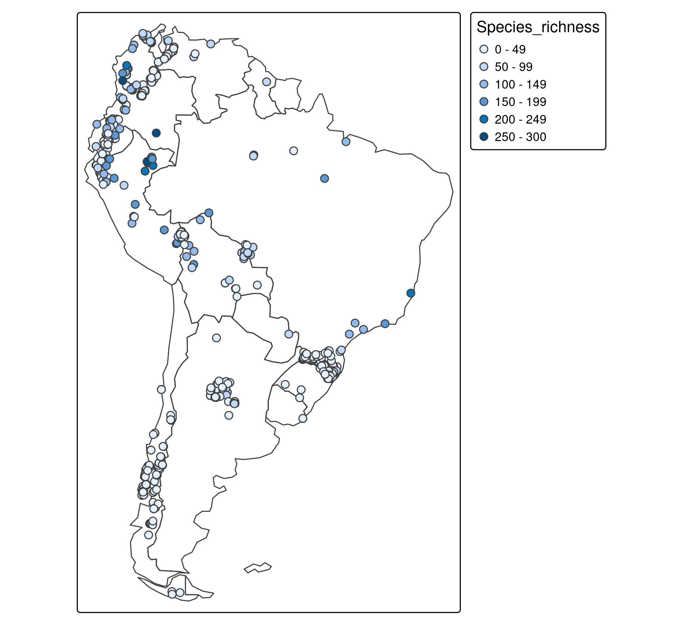
Uczenie maszynowe
Metody uczenia maszynowego, takie jak lasy losowe, potrafią wychwycić złożone relacje między predyktorami a zmienną objaśnianą.
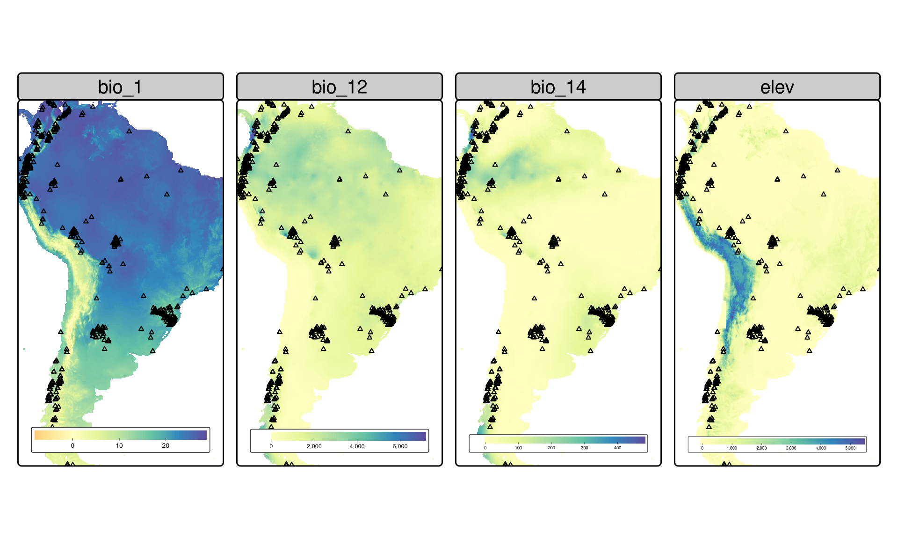
Problem: Te metody zakładają niezależność obserwacji – każdy punkt jest traktowany jako niezależny.
W praktyce ignorowanie autokorelacji przestrzennej i niereprezentatywności próby prowadzi do nadmiernego dopasowania modelu i błędnych generalizacji.
Rozkład przestrzenny danych
Dane treningowe w badaniach przyrodniczych są często zaagregowane przestrzennie.
Niektóre obszary są daleko od punktów treningowych
Wartości predyktorów dla opróbowanych lokalizacji mogą drastycznie różnić się od tych dla obszarów, które chcemy prognozować
Dane testowe również skupione przestrzennie –- nie reprezentują całego obszaru, który chcemy prognozować.
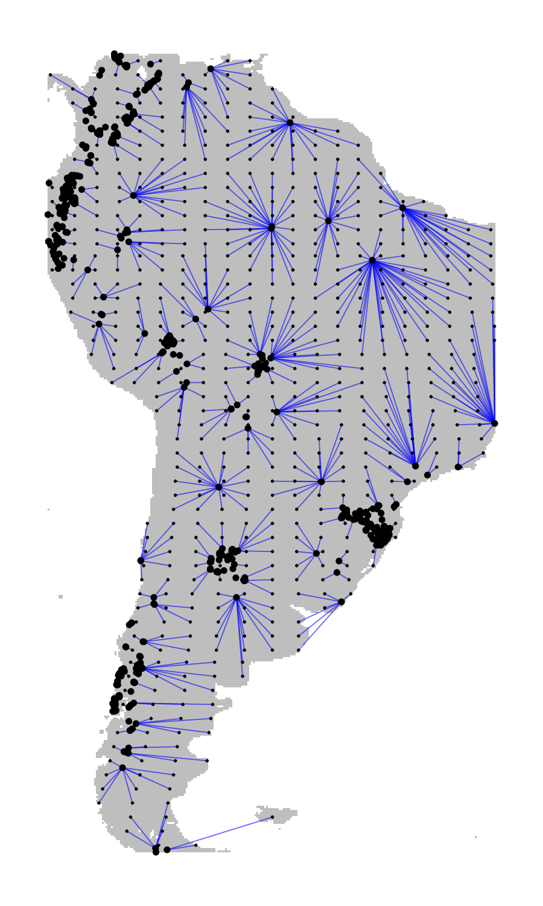
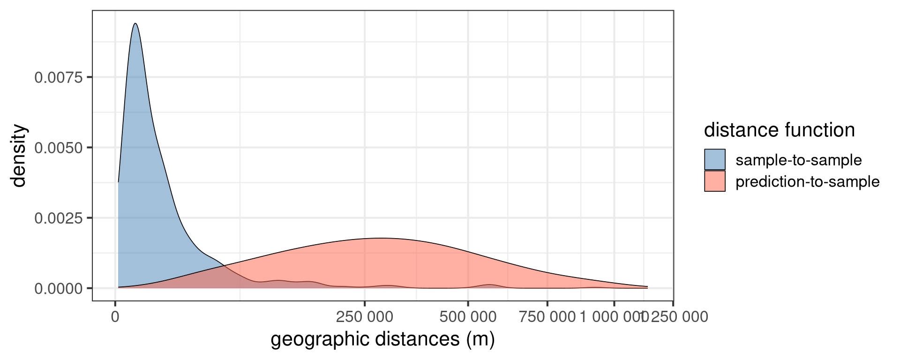
Jak wiarygodnie ocenić model?
Gdzie predykcje modelu są wiarygodne?
Rozwiązanie 1: Walidacja dostosowana do domeny predykcyjnej
Standardowa walidacja krzyżowa (random CV) daje zbyt optymistyczne wyniki w takich sytuacjach.
Dopasowuje podzbiory walidacyjne, aby odległości treningowo-testowe odpowiadały odległościom predykcyjnym.
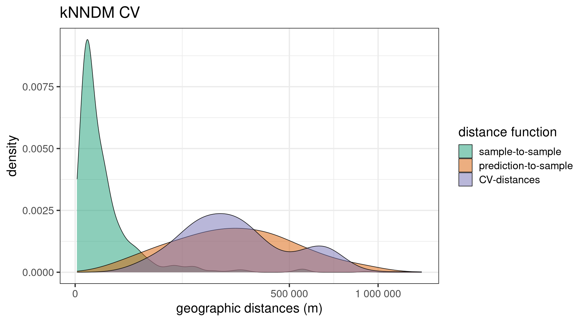
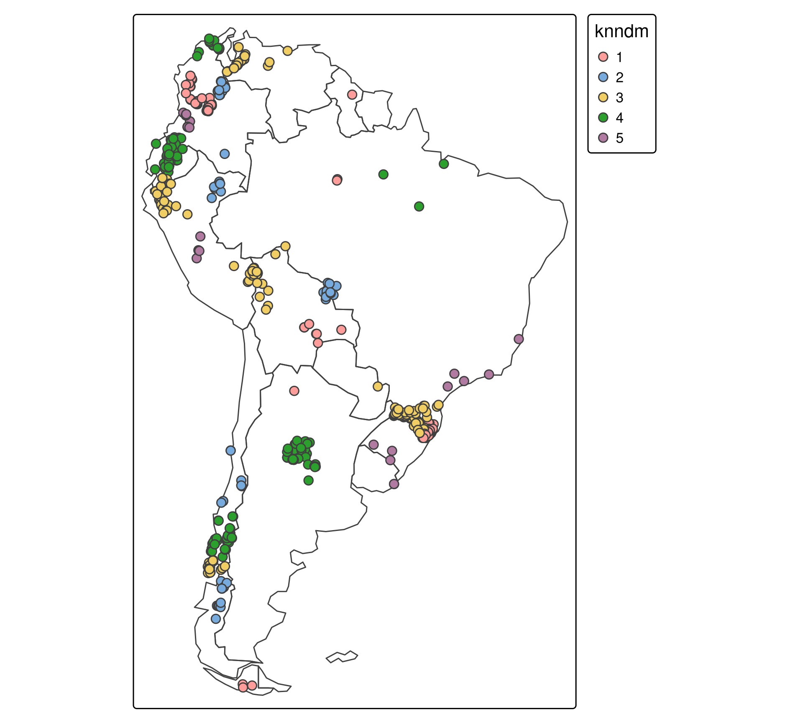
Rozwiązanie 2: Obszar stosowalności
Metoda AoA (Area of Applicability) pozwala zidentyfikować obszary, dla których model nie posiada odpowiednich danych treningowych, co czyni predykcje mało wiarygodnymi.
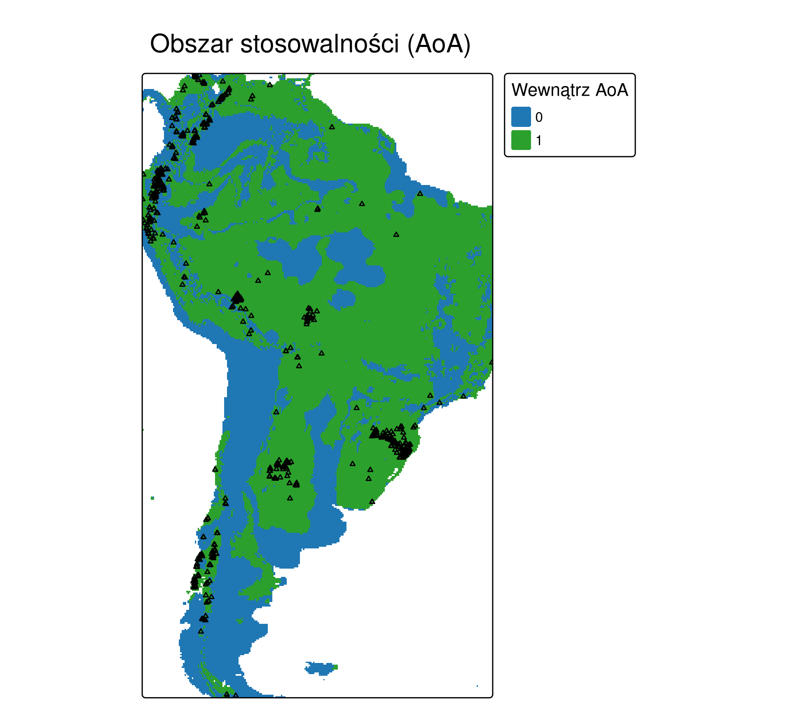
Porównanie: walidacja błędna vs poprawna
Zbyt optymistyczna ocena modelu:
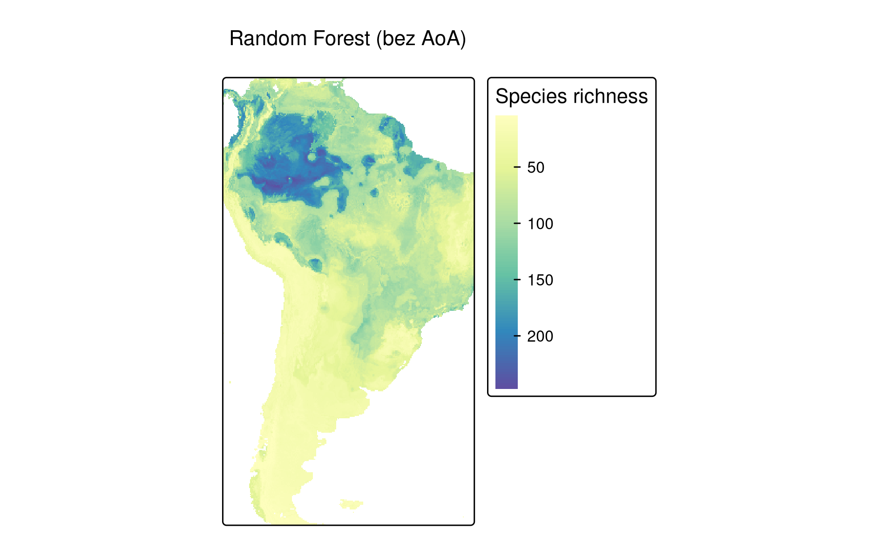
25.31
RMSE z walidacji losowej / skupionych danych testowych
Bardziej wiarygodna ocena modelu:
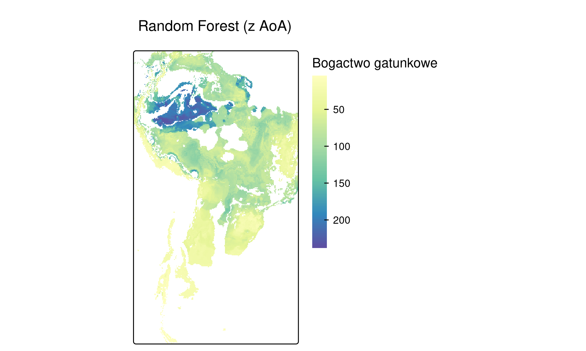
33.79
RMSE z walidacji kNNDM; AoA dodatkowo ogranicza interpretację mapy do obszarów wspartych danymi treningowymi
Do tej pory mówiliśmy głównie o tym, jak modelować wartości w przestrzeni. Teraz przechodzimy do kwestii, jak opisywać i porównywać same wzorce przestrzenne.
Teoria informacji a geografia
Dlaczego wzorce są ważne?
Odkrywanie i opisywanie wzorców (ang. patterns) to kluczowy element analizy przestrzennej. Wzorce są powiązane z procesami naturalnymi i społecznymi.
Podatność krajobrazów leśnych na ekspansję rolnictwa


%20-%20datowanie%2014c%20-%20NAU%20-%20Flagstaff%20-%20podobny%20w%20Gliwicach,%20starszy%20w%20Poznaniu.jpg)